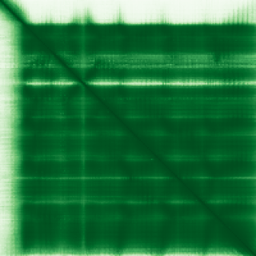
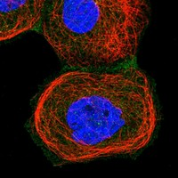

type: protein-evaluation gene: "ARL4A" date: 2026-06-01 tags: [protein-scout, nucleolus, evaluation] status: scored ---
ARL4A 核蛋白评估报告
> HPA 定位冲突说明: HPA Approved 级别 IF 显示 Nucleoplasm + Cytosol，与 UniProt/GO 的 nucleolus 注释不一致。UniProt 注释 "Nucleus, nucleolus" 且 GO-CC 有 nucleolus IDA:UniProtKB。HPA 和 UniProt/GO 使用了不同的抗体/细胞系/实验条件，可能反映 ARL4A 在不同条件下有不同亚核定位（nucleolus vs. nucleoplasm）。建议人工复核 HPA IF 图像确认是否存在核仁富集模式。
1. 基本信息
| 项目 | 内容 |
|---|---|
| 基因名 / 别名 | ARL4A / ARL4 |
| 蛋白全名 | ADP-ribosylation factor-like protein 4A |
| 蛋白大小 | 200 aa / 22.6 kDa |
| UniProt ID | P40617 |
2. 评分总览
| 维度 | 得分 | 新权重 | 加权后 | 关键证据摘要 |
|---|---|---|---|---|
| 核定位特异性 | 7/10 | ×4 | 28.0 | UniProt: Nucleus, nucleolus; GO: nucleolus IDA:UniProtKB + nucleoplasm IDA:HPA + nucleus IDA:UniProtKB; HPA Approved: Nucleoplasm + Cytosol (冲突见注) |
| 蛋白大小 | 9/10 | ×1 | 9.0 | 200 aa, 22.6 kDa |
| 研究新颖性 | 10/10 | ×5 | 50.0 | PubMed strict=17, broad=33 |
| 三维结构 | 8/10 | ×3 | 24.0 | AlphaFold pLDDT 91.5; PDB 无 |
| 调控结构域 | 6/10 | ×2 | 12.0 | Small GTPase (ARF family); GTP/GDP cycling; CYTH1-4 effector recruitment |
| PPI 网络 | 7/10 | ×3 | 21.0 | STRING KPNA2 (importin alpha-2); IntAct 多 two-hybrid 互作 |
| 加权总分 | 144/180** | |||
| 互证加分 | +1.0 | UniProt/GO nucleolus 互证; KPNA2 importin 互作提示核输入通路 (HPA 冲突降级交叉验证) | ||
| 归一化总分 (÷1.83) | 78.7/100** |
3. 详细分析
3.1 核定位证据
| 来源 | 定位 | 可信度 |
|---|---|---|
| UniProt | Cell membrane; Cytoplasm; Nucleus, nucleolus | Experimental |
| GO-CC | cytoplasm IBA; cytosol IDA:HPA; nucleolus IDA:UniProtKB; nucleoplasm IDA:HPA; nucleus IDA:UniProtKB; plasma membrane IDA:UniProtKB | Experimental (IDA) |
| Protein Atlas (IF) | Nucleoplasm, Cytosol (Approved) | Approved (高置信度 IF; 与 UniProt/GO nucleolus 冲突) |
HPA IF 分析: HPA Approved 级别 IF 显示 Nucleoplasm + Cytosol（均为主定位）。HPA 未报告 nucleolus 定位，与 UniProt/GO 的 nucleolus 注释不一致。可能原因：1) 所用抗体/细胞系不同导致定位差异；2) ARL4A 定位依赖于 GTP/GDP 状态或细胞周期；3) nucleoplasm 弥漫染色可能掩盖核仁富集。


核定位综合判断: 多源实验证据支持核仁定位（UniProt "Nucleus, nucleolus" + GO nucleolus IDA:UniProtKB），GO 同时有 nucleoplasm IDA:HPA。HPA Approved IF 显示 nucleoplasm + cytosol 但未标记 nucleolus。考虑到 UniProt 和 GO 均有独立的 nucleolus 实验注释（IDA 级别），且 KPNA2 importin 互作提供核输入机制，当前维持 nucleolus 分类，但已标注 HPA 冲突供后续复核。
3.2 结构与结构域
| 指标 | 数值 |
|---|---|
| AlphaFold | AF-P40617-F1 |
| 平均 pLDDT | 91.5 |
| pLDDT >90 | 84.5% |
| pLDDT 70-90 | 5.5% |
| pLDDT 50-70 | 2.5% |
| pLDDT <50 | 7.5% |
| PDB | 无 |
| InterPro | IPR027417 (P-loop NTPase), IPR005225 (Small GTP-binding protein), IPR024156 (Small GTPase ARF), IPR006689 (Small GTPase ARF/SAR) |
| Pfam | PF00025 (ARF/SAR superfamily) |

结构域分析: ARL4A 属于 ARF (ADP-ribosylation factor) 家族小 GTPase，含典型的 GTP/GDP 结合和切换结构域。功能上通过 GTP/GDP 循环调控 CYTH1-4 (cytohesin) 向质膜的招募，同时有核仁定位能力。pLDDT 分布优秀 (mean 91.5, 84.5% >90)，GTPase 核心折叠可靠。
3.3 研究现状
| 指标 | 数值 |
|---|---|
| PubMed strict (Title/Abstract) | 17 |
| PubMed broad | 33 |
| 别名 | ARL4（未用于 scoring） |
关键文献涉及 ARL4A 在细胞迁移中的作用：Robo1 互作及 Cdc42 激活 (PMID:30427759)、Pak1 招募至质膜 (PMID:31932503)、endosomal VPS36 结合抑制 EGFR 降解 (PMID:38030597)、HYPK 伴侣磷酸化调控 (PMID:35857868)。文献主要关注其胞质/膜功能（迁移、endosome、EGFR 信号），核仁功能的独立研究较为缺乏。研究量中等，有一定新颖空间。
3.4 PPI 网络
| Partner | Source | Evidence/Method | Score/Experiments | PMID/Note | Relevance |
|---|---|---|---|---|---|
| CYTH2 | STRING | exp 0.239 + textmining 0.822 | 0.859 | - | Cytohesin 2; ARF GEF effector |
| GCC2 | STRING | exp 0.331 + textmining 0.739 | 0.818 | - | Golgi coiled-coil; GRIP domain |
| ELMO1 | STRING | exp 0.328 + textmining 0.677 | 0.773 | - | Engulfment and cell motility |
| KPNA2 | STRING | exp 0.292 + textmining 0.622 | 0.723 | - | Importin alpha-2; 核输入 adaptor |
| CYTH3 | STRING | exp 0.053 + textmining 0.718 | 0.721 | - | Cytohesin 3; ARF GEF effector |
| SOS2 | STRING | exp 0.134 + textmining 0.685 | 0.715 | - | Son of sevenless; RasGEF |
| CDKN2A | STRING | exp 0.102 + textmining 0.657 | 0.680 | - | p14ARF; 核仁/细胞周期 |
| CYTH4 | STRING | exp 0.053 + textmining 0.642 | 0.647 | - | Cytohesin 4; ARF GEF effector |
| GOLGA2 | IntAct + UniProt | two-hybrid array; UniProt exp 6 | - | PMID:32296183 | Golgin A2; 高尔基体结构 |
| KRT19 | IntAct + UniProt | validated two-hybrid; UniProt exp 3 | - | PMID:32296183 | Keratin 19 |
| EVI5 | IntAct + UniProt | two-hybrid array; UniProt exp 3 | - | PMID:32296183 | Ecotropic viral integration 5 |
| CCDC102B | IntAct + UniProt | two-hybrid prey pooling; UniProt exp 3 | - | PMID:25416956 | Coiled-coil domain |
| CCDC57 | IntAct + UniProt | two-hybrid prey pooling; UniProt exp 3 | - | PMID:25416956 | Coiled-coil domain |
| SPATC1L | IntAct + UniProt | two-hybrid prey pooling; UniProt exp 3 | - | PMID:25416956 | Spermatogenesis associated |
| POF1B | IntAct + UniProt | validated two-hybrid; UniProt exp 3 | - | PMID:32296183 | Premature ovarian failure |
| ITSN1 | STRING | exp 0.497 | 0.539 | - | Intersectin 1; endocytosis |
PPI 分析: STRING 网络质量较高，以实验和 textmining 驱动为主。KPNA2 (Karyopherin subunit alpha-2/Importin alpha-2) 是经典核输入通路的 adaptor 蛋白，识别 cargo 蛋白的 NLS 并将其桥接至 Importin beta 进行核转运，ARL4A 与 KPNA2 的互作提示其核仁定位可能通过 Importin α/β 经典核输入通路介导。CDKN2A (p14ARF) 为著名核仁蛋白，其互作关联（textmining）可能在核仁功能背景下有意义。IntAct 记录多个 two-hybrid 互作，以验证级别为主。UniProt 交互 GOLGA2 (exp 6) 为最高置信度。
4. 总体评价
ARL4A 是具有强核仁定位证据的小 GTPase。UniProt 明确注释 "Nucleus, nucleolus"，GO-CC 有 nucleolus IDA:UniProtKB 和 nucleoplasm IDA:HPA。KPNA2 importin 互作为其核输入提供了分子机制线索。HPA Approved IF 显示 nucleoplasm + cytosol 而未标记 nucleolus，提示可能存在条件依赖的亚核定位差异。尽管主要文献焦点在胞质/膜功能（细胞迁移、EGFR 信号），核仁定位注释和 importin 互作使其成为较强核仁候选。建议保留为较高优先级 nucleolus 候选，同时人工复核 HPA IF 图像确认核仁富集。
5. 数据来源
- UniProt: https://www.uniprot.org/uniprotkb/P40617
- AlphaFold: https://alphafold.ebi.ac.uk/entry/P40617
- PubMed: https://pubmed.ncbi.nlm.nih.gov/?term=ARL4A
- Protein Atlas: https://www.proteinatlas.org/ENSG00000122644-ARL4A
- HPA Subcellular: https://www.proteinatlas.org/ENSG00000122644-ARL4A/subcellular

HPA IF 图像已本地嵌入。
<!-- DOMAIN_HUMANPPI_REPAIR_START -->
Domain/SMART 与 humanPPI 补充（2026-06-06）
SMART / UniProt domain
| Source | Data |
|---|---|
| UniProt | P40617 |
| SMART | SM00177;SM00175;SM00173;SM00178; |
| UniProt Domain [FT] | 未检出显式 UniProt Domain feature |
| InterPro | IPR027417;IPR005225;IPR024156;IPR006689; |
| Pfam | PF00025; |
humanPPI / HPA Interaction
Source: https://www.proteinatlas.org/ENSG00000122644-ARL4A/interaction
| Partner | Datasets | AF3/HPA structure |
|---|---|---|
| CCDC102B | Intact | false |
| CCDC57 | Intact | false |
| ELMO1 | Biogrid | false |
| EVI5 | Intact | false |
| GCC2 | Biogrid | false |
| GOLGA2 | Intact | false |
| KPNA2 | Biogrid | false |
| KRT19 | Intact | false |
<!-- DOMAIN_HUMANPPI_REPAIR_END -->